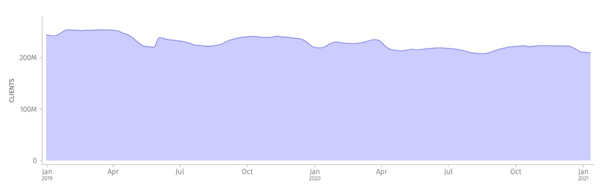
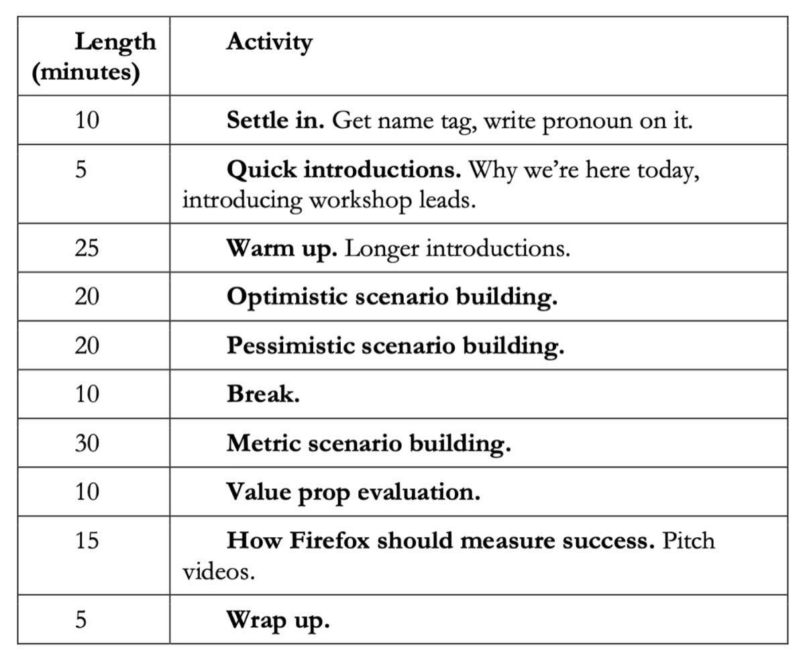
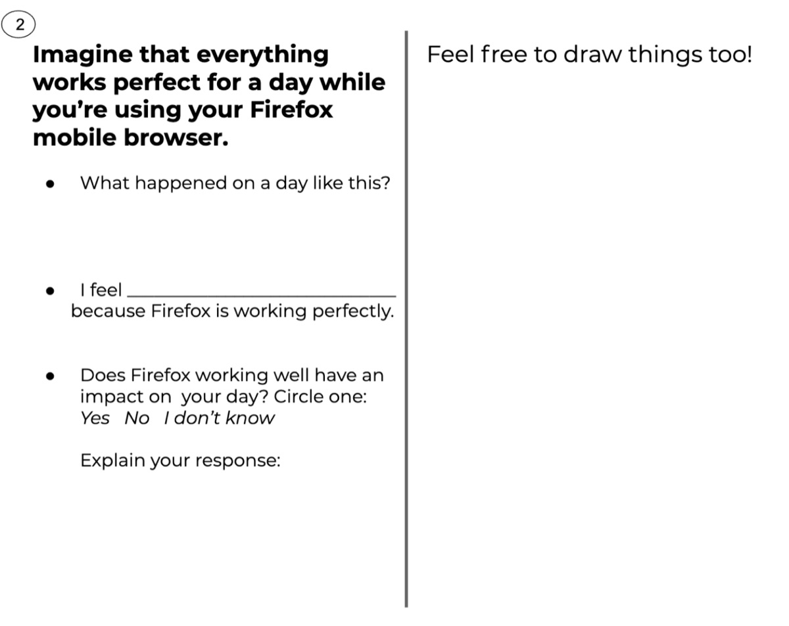
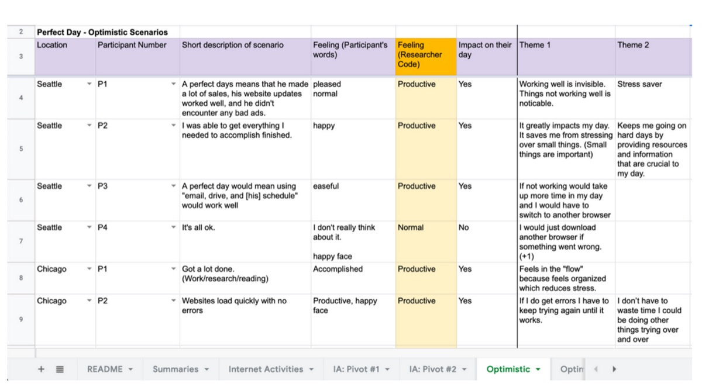
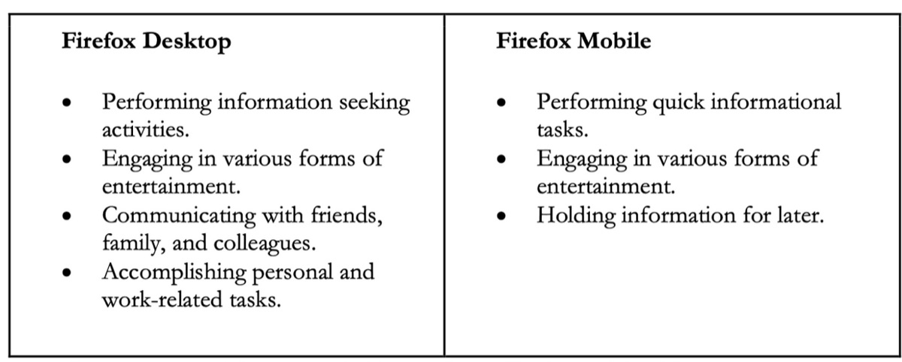
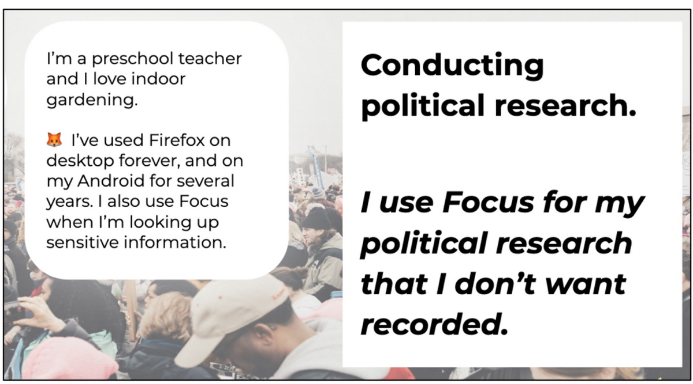

Who Gets to Define Success? Listening to Stories of How People Value Firefox to Redefine Metrics
Co-Author: Jennifer Davidson

Futures Thinking: A participant in one of our Seattle workshops reflects on an optimistic scenario building exercise.
Measuring success through how a product scales is commonplace in the technology industry. Scale is often assessed through things like “MAU” (monthly active use) and “DAU” (daily active use), and entire communities exist to simply increase the growth curve of those numbers (GrowthHackers 2020).

Firefox Monthly Active Users (MAU): Measures the number of Firefox Desktop clients active in the past 28 days. (Source: Firefox Public Data Report)
With over 200 million people using our web browser every month, Firefox has arguably achieved classic definitions of scale. However, as researchers, we also know that the reasons behind product choice and usage are often more complex than numbers alone can illustrate.
In early 2019, our Data Science team began to review our current in-product metrics in an effort to better understand how to interpret our usage numbers and expose any gaps. Firefox User Researcher Jennifer Davidson (and co-author) consulted on that project, which ultimately found that we had very limited qualitative understanding of Firefox usage numbers. Around the same time, a cross-functional team, including Firefox User Researcher Gemma Petrie (and co-author), began an internal research project to gain a top-down view of value by asking our senior leaders how they would define the value of our products. Perhaps unsurprisingly in such a large organization, there were a wide variety of responses.
In late 2019, Gemma and Jennifer proposed a study to align these efforts and explore the gaps we were observing. We knew it was time to get an “outside in” perspective to inform our internal narrative, and ultimately help our organization make better product decisions. At the heart of this research was a fundamental question: How do people describe the value they get out of Firefox? We hypothesized that by better understanding how people describe the value they get out of Firefox, we would be able to better inform how to measure our success as a company and encourage our leaders to complement traditional measures of scale with more human-centered metrics.
Some of you may be thinking, “That is a very fundamental question for such an established product! Why don’t you already know the answer to it?” There are two primary reasons why this is a difficult question for our Firefox researchers to study. First, commonplace products like a web browser present unique challenges. The role of a web browser is almost akin to a utility–it is so deeply domesticated into people’s lives, that they may use Firefox every day without thinking much about it (Haddon 2006). A second unique challenge for Mozilla is that the usage data to understand how people use Firefox is often nonexistent. Mozilla practices very limited data collection. Our data practices are aligned with our mission and we do not collect information about the content people visit on the web (Mozilla 2020b, Mozilla 2020c, Mozilla 2020d). Often, user research is the only opportunity our organization has to understand the content people seek out and their workflows within the browser.
Approach
Our research took place in six locations: Berlin, Chicago, Portland (Oregon), Seattle, Taipei, and Vancouver (Canada). The research included three phases: a diary study, remote interviews, and an in-person workshop.
There were 61 participants across all the locations. The participants remained the same during each of three phases, to help us get a deeper understanding of how they value Firefox. For example, we ran two workshops in Vancouver, and there were five to six participants in each workshop. Those same five to six participants also took part in the diary study and remote interview.
All participants were required to have and use Firefox on either a desktop computer, a mobile device, or both. Participants were all 19 years or older, and spoke either conversational English, German, or Chinese depending on where they were located. As Firefox is used by a range of individuals, we recruited a diverse representation of people, on many different identity axes.
Research Activities
Diary study. Participants responded to a daily survey for three days about how they use Firefox. We also had participants get in the mindset of thinking more deeply about how they value Firefox by responding to a question asking how they would be impacted (or not) if Firefox wasn’t available that day.
Remote interviews. We conducted short 10–15 minute interviews to start building rapport with individual participants, to learn about participants’ history with Firefox, and to clarify diary study entries.
In-person workshop. The third, and main part, of the study was a two and a half hour in-person workshop. Each workshop involved five to six participants, and two to four Mozilla employees. The workshop relied on both the remote interviews and diary study to gain a better understanding of participants and their use of Firefox before diving deeper. We ran a variety of activities, borrowing methods from Futures Thinking (Textor 1980) and Participatory Design (Stephen 2012).

Workshop Agenda. An interactive workshop that included a range of activities.
Optimistic Scenario Building. An example of an activity was Optimistic Scenario Building, a positive retrospective worksheet to elicit conversations about how people value Firefox. Participants filled out the worksheet individually, then we discussed results together as a group.

Optimistic Scenario Building Worksheet. Positive retrospective worksheet to elicit conversations about how people value Firefox.
Pitch video. At the end of the workshop, participants took part in a participatory design activity where they created a pitch video. The pitch video contained a recommendation for how they thought Mozilla leaders should measure the value people get from Firefox. We recorded each participant giving a 1 minute or less fictional pitch to Mozilla leaders. In one such pitch video, a participant thought Mozilla should measure if people understand their security and privacy while using the browser. As Firefox researchers, we definitely do research in this area, but as an organization, we haven’t used a metric like that to measure our success. It’s a great idea, and we’re thankful to the participant! All in all, participants came up with almost 200 ideas about how Mozilla should measure its success, which shows the power of participatory design.
“I would base my assumptions on usage figures, i.e. usage period, age. I’d also argue that Mozilla is limited to the most important features and remains minimalistic and clear — especially on the phone. It would also be important that security is well understood by users — especially younger folks. It should be easy to understand security settings and stay informed about which data is collected.” — Participant in Berlin
💡 How we could do our research activities completely remotely?
With the continued pandemic and resulting lock-downs, remote research has been on all of our minds. How might we adapt this study, if we planned it today?
While a workshop was helpful to gain a lot of information, for participants to build off of each others’ experiences, and to fully engage stakeholders, we could change the format to a remote interview with interactive activities via an online whiteboard (like Miro), with all members of a household. We would gain different insights given home dynamics, but probably also valuable!
Like any completely remote research, we may be leaving out people who don’t use or have access to Firefox at home. This could be mitigated by recruiting for people who only use Firefox in certain settings (like a library, for example), and conducting retrospective interviews with them.
Firefox’s Workplace
Part of the reason our project was successful was because of the make-up of Firefox’s workplace; Firefox is a global, distributed organization, with a remote-first approach to work. The UX team had designers and researchers experienced with research study facilitation in Germany, Taipei, Canada, and the United States. Because of our remote-first culture, we were able to put processes in place that allowed much of our research planning and analysis to happen asynchronously via Slack, documents, and spreadsheets. In addition to having experienced facilitators worldwide, the research team has worked diligently over many years to build up visibility for research across the organization. There was already a practice in place of inviting stakeholders to take notes and observe sessions, for managers to support time out from other work to support research studies, and for stakeholders to travel, if necessary, to participate in research studies.
Outcomes
This research helped us better understand the value of our products by focusing on the stories behind people’s needs and the workflows people use to accomplish their goals. To make coordinated analysis possible with multiple locations conducting this work simultaneously, we created a set of detailed spreadsheets ahead of time and set up a half-day after each workshop to dig into analysis with stakeholders. The spreadsheets allowed for multiple, distributed field teams to enter data at the same time in a structured way, which greatly simplified our more formal analysis work later on.

Group Analysis Spreadsheet. A section of our group analysis spreadsheet showing how we managed data from multiple locations simultaneously.
Futures Thinking Scenarios. Through our Futures Thinking exercises, we were able to elicit optimistic, pessimistic, and “normal” scenarios from participants. We learned that when Firefox works well, participants feel “productive”, “happy”, “efficient”, “in the flow”, and “normal.” Imagining when Firefox doesn’t work well (like losing all their saved history, passwords, and bookmarks), participants felt “indifferent”, “angry”, and “stressed.”
Discussions around these scenarios helped us learn how participants felt about situations that were related directly to our metrics. It showed us something that we as researchers often observe — that positive “hockey-stick” style growth or usage, is not always a “good thing” for someone using a product.
For example, one participant described preparing for a race in Whistler, Canada called the Donut Dash. He described researching the race rules, FAQs, the registration fee, the registration form, and the race course. All of these details were open in different tabs in his Firefox mobile browser. He started his search excited to sign up for the race, but ended up feeling overwhelmed by the number of tabs he had open and how hard it was to keep track of all the different information he needed to understand. This participant described this experience as “information overload” and something that ultimately made him feel uninformed, unprepared, and unmotivated. — Participant in Vancouver
The number of open tabs correlates with a metric around intensity of use, which as a business is viewed positively and is valuable for revenue. However, for this participant, his story shows how having so many tabs open was overwhelming to him.
Most Valued Use Cases. During the workshops, we asked people to write or draw at least one important thing they do on the internet. We followed this exercise with a discussion where participants explained their choices and built on what other participants were sharing. During analysis, the researchers coded all of these examples against a primary list of internet workflows that our team has developed over several years of research to categorize them into high-level themes. We learned that the top-of-mind most valuable activities that participants use Firefox for are:

Valuable Use Cases in Firefox Desktop and Mobile. Participants shared their most valuable ways they use Firefox, and they fell into the categories above.
This use case articulation ended up inspiring a variety of mixed method efforts in our organization. Other members of our research team, primarily Rosanne Scholl, used this information to design multiple surveys fielded across thousands of individuals to see how these categories “rate” at scale. The results of these surveys showed that these categories were highly durable and effectively described the high-level activities that people who use Firefox engage in with the browser. One interesting survey finding was that “education” emerged as a frequently cited additional important use case for desktop in our surveys, which coincided with the beginning of the COVID-19 pandemic and a massive cultural shift toward online learning.
Perhaps the most tangible success coming from this work is that we were able to highlight the value of one of our existing products by helping our leadership teams look beyond basic usage numbers. Firefox Focus is a specialty mobile browser designed around privacy and simplicity. Focus has a relatively small number of people who use it, leading to some discussion internally about whether or not we should be investing our limited resources in the product. We were able to show through this study (and research by our colleague Alice Rhee) that despite its relatively small user base, Focus is often used alongside another Firefox mobile browser and plays a critical role in some people’s workflows for specific use cases.

Using Firefox Focus. Excerpt from internal presentation to stakeholders.
For example, a preschool teacher in one of our workshops described themselves as a long-term user of Firefox. They use Firefox on both their desktop and their Android device, and they also said they use Focus for specific tasks. They do a lot of research on their mobile device related to their hobbies — things like gardening and vegan cooking. This participant is also quite politically active and they described how they switch to Focus for their political research because they, “Don’t always want things recorded.” — Participant in Seattle
We heard similar things from other participants who used Focus in our workshops. Sometimes for content that was sensitive in nature, but other times for quick one-off searches because participants liked starting each session fresh and knew there was some information they didn’t need to retain.
We were able to demonstrate the value of Focus, beyond usage numbers only, to two senior PMs in this product space who were part of our field team. These individuals were able to hear these stories from participants first-hand and debrief with our field team after our workshops. We were able to make the case to keep this unique product around in spite of its lack of scale, and ultimately influenced our organization’s view on how we can define the success of products like Firefox Focus.
💡How could we do our analysis activities completely remotely?
How might we adapt the analysis phase of our study if we planned it today?
It was important to us to include our stakeholders in our analysis activities as a way to create a more meaningful experience for them, and to ensure that their unique perspectives were part of our final reporting. From a practical standpoint, the analysis spreadsheets we created in advance would work well as a way to organize data whether or not groups were co-located. But from a human standpoint, a fully remote half-day group analysis session can get tiresome quickly. Splitting the time into two, two-hour sessions or incorporating an interactive online whiteboard (like Miro) for activities like affinity diagramming could be a helpful addition.
The primary researchers took the material from these short analysis sessions and completed their full analysis remotely. We encourage other distributed researchers to explore remote analysis collaboration.
Conclusion
This study demonstrates that a relatively small number of meaningful ethnographic insights can be powerful enough to influence business strategy. We hope you come away from this blog post with an understanding of how you might run a research study that shows a human-centered approach to understanding product “value.” By understanding the stories behind usage, qualitative research can complement standard growth metrics and provide organizations with a more complete understanding of how people engage with your products.
We also hope you are inspired to think even more deeply about how you can involve stakeholders in your research and utilize remote collaboration to engage with distributed teams. We believe our research had impact due to stakeholders participating fully in the research activities: from proposal to analysis to reporting.
Gemma Petrie & Jennifer Davidson presented this work at the 2020 EPIC Conference. You can find our case study paper (free with registration) and a video of our talk (for EPIC members) on the EPIC website.
Keywords: Diary Study, Firefox, Futures Thinking, Interviews, Mozilla, Participatory Design, Remote Research, Stakeholder Interviews, Workflow, Workshop
References
GrowthHackers. 2020. GrowthHackers website. Accessed September 27, 2020. https://growthhackers.com/posts.Haddon, Leslie. 2006. “The Contribution of Domestication Research to In-Home Computing and Media Consumption.” The Information Society: An International Journal 22 (4): 195–203. doi: 10.1080/01972240600791325.Lindsay, Stephen, Daniel Jackson, Guy Schofield, and Patrick Oliver. 2012. “Engaging older people using participatory design.” In Proceedings of the SIGCHI conference on human factors in computing systems: 1199–1208. doi: 10.1145/2207676.2208570.Mozilla. 2020a. “Firefox Public Data Report.” Mozilla website. Accessed September 27, 2020. https://data.firefox.com/dashboard/user-activity.Mozilla. 2020b. “Lean Data Practices.” Mozilla website. Accessed September 27, 2020. https://www.mozilla.org/en-US/about/policy/lean-data/.Mozilla. 2020c. “Mozilla Privacy Policy.” Mozilla website. Accessed September 27, 2020. https://www.mozilla.org/en-US/privacy/.Mozilla. 2020d. “We’re Building a Better Internet.” Mozilla website. Accessed September 27, 2020. https://www.mozilla.org/en-US/mission/.Textor, Robert B. 1980. A handbook on ethnographic futures research. Stanford, CA: Stanford University Press.